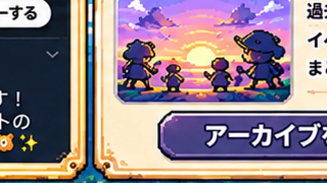

📚 シーズンアーカイブ
開催が終了したゲーム・シーズンの記録を、このページに少しずつ残していきます。

次のような内容を、あとから振り返れる場所にしていく予定です。
- ゲームごとの開催内容
- イベント
- スクリーンショット
- 思い出
📖 開催記録は準備中です。
過去の開催実績を確認できないため、架空のシーズン履歴は掲載していません。
過去の開催実績を確認できないため、架空のシーズン履歴は掲載していません。
開催が終了したゲーム・シーズンの記録を、このページに少しずつ残していきます。

次のような内容を、あとから振り返れる場所にしていく予定です。